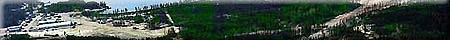

1895 - 1904
1910 - 1919
1920 - 1929
1930 - 1939
1940 - 1949
1950 - 1959
1960 - 1969
1970 - 1979
1980 - 1989
|

|

|
Uranium History by Decade
1895 - 1904
- 1895 - X-rays were discovered by Wilhelm Roentgen.
- 1896 - In Paris, France, Henri Becquerel discovered uranium.
- 1898 - Marie and Pierre Curie discovered and named elements radium and polonium.
- 1903 - The radiation from radium was used to treat cancerous tumors.
- 1904 - The nature of radioactivity and the theory of radioactive decay was published in a paper by Ernest Rutherford.
1910 - 1920
- 1910 - Cosmic radiation first identified by Hess and Kohlhoerster
- 1911 - Discovery by Rutherford that the atom consisted of a small, dense nucleus. Positively charged particles in the nucleus were named protons.
Niels Bohr proposed theory that electrons orbit the nucleus of the atom.
- 1913 - The modern x-ray tube was developed by William Coolidge in the United States.
- 1915 - The first recommendations on safe use of x-rays were issued by the Roentgen Society.
1920 - 1929
- 1928 - The International Commission on Radiological Protection (ICRP) was established.
1930 - 1939
- 1930 - Pitchblende was discovered at Great Bear Lake in the Northwest Territories
- 1932 - James Chadwick discovered the existence of neutrons in the nucleus of the atom.
- 1936 - Uranium ore was discovered in a mine on the north shore of Lake Athabasca at Goldfields, Saskatchewan.
- 1937 - Radioisotopes were used for therapy for the first time in the United States.
- 1939 - In Germany, Otto Hahn and Lise Meitner discovered that uranium could release energy by nuclear fission. The threat of war caused the work of atomic scientists to be covered-up and classified as military secrets.
1940 - 1949
- 1942 - Nuclear research was conducted in Canada by British scientists.
The first controlled nuclear chain reactor was produced in the United States by a team led by Enrico Fermi. No public announcement was made because of wartime restrictions.
- 1943 - In order to gain control of all sources of uranium in their respective countries, the governments of Canada, the United Kingdom and the United States banned all private exploration for, and development of, radioactive materials.
The federal government established a Crown corporation, Eldorado Mining and Refining Limited, to oversee Canadian uranium interests. This company expropriated the uranium mine at Port Radium (Northwest Territories) and was given a monopoly in all uranium prospecting and developing activities.
- 1944 - Chalk River, Ontario, was established as the first national research centre in Canada.
- 1945 - A second discovery if uranium ore was made at Goldfields, Saskatchewan.
Eldorado Mining and Refining Limited staked its first claim in the Lake Athabasca area in northern Saskatchewan.
The first operational nuclear reactor outside the United Sates was started up at Chalk River.
The Manhattan Project, research into the development of the atomic bomb being done in the United States, produced the first atomic explosion in New Mexico.
Atomic bombs were dropped by the United States on Hiroshima on August 6th and Nagasaki on August 9th, demonstrating the power contained in the uranium atom. This ended World War II and started the nuclear arms race.
- 1946 - The Atomic Energy Control Act was passed by the federal government and the Atomic Energy Control Board (AECB) was created to ensure that nuclear energy is used a s safely as possible.
- 1948 - The government agreed to purchase all uranium through Eldorado Mining and Refining Limited.
The federal government lifted the ban on private exploration for radioactive minerals and incentives were offered to encourage prospectors to search for uranium.
The Saskatchewan government set up prospectors' training schools to encourage prospecting for uranium.
- 1949 - A uranium mine was developed in the Beaverlodge area by Eldorado Mining and Refining Limited.
The U.S.S.R. conducted their first atomic tests.
1950 - 1959
- 1950 - The onset of the Korean War maintained the demand for uranium for use as weapon material.
- 1951 - The first cancer treatment units were developed in Canada and installed at the University Hospital, Saskatoon, Saskatchewan and Victoria Hospital, London, Ontario.
In the United States, the first electricity was generated from the fission of uranium atoms.
Atomic Energy of Canada Ltd. (AECL), a Crown corporation, was established to conduct research and development into peaceful uses of nuclear technology and to sell, supply and service CANDU nuclear reactors.
- 1952 - The town of Uranium City was established in the area of Beaverlodge. Buildings form Goldfields were moved to the site.
An operator's error caused radioactive particles to spread throughout the nuclear reactor at Chalk River. Massive clean-up was required.
- 1953 - The mine and mill at Beaverlodge went into production.
- 1954 - The hydrogen bomb was developed in the United States, quickly followed by similar developments in the U.S.S.R.
- 1955 - Gunnar Mines Limited, a private uranium mining company, began production in the area of Beaverlodge.
- 1956 - The first nuclear energy power plant opened in England.
- 1957 - Lorado Uranium Mines Limited, a private company, began production in the area of Beaverlodge.
Numerous small mines operated in the Beaverlodge area, using Eldorado and Lorado milling facilities.
The International Atomic Energy Agency (IAEA) was created to establish and administer international safeguards for the peaceful use of nuclear energy.
- 1958 - Contracts with the United States to purchase Canadian uranium were not renewed.
- 1959 - A second nuclear development centre was established at Whiteshell in Manitoba.
1960 - 1969
- 1960 - Lorado Uranium Mines Limited closed.
The Canadian government allowed radiation to be used for inhibiting the sprouting of potatoes.
- 1962 - Canada generated electricity for the first time using nuclear energy.
- 1964 - Gunnar Mines Limited closed due to depletion of ore body. Eldorado was the only uranium production company in Saskatchewan.
Interest in nuclear power plants began. Electricity derived from nuclear reactors was proven competitive with electricity from conventional thermal generators.
The federal government developed the policy of exporting Canadian uranium only to those countries using uranium for peaceful purposes.
A ban on atmospheric testing signed in 1958 by the United State and the U.S.S.R. was enforced.
- 1967 - Government incentives were offered to exploration companies by the Saskatchewan government.
- 1968 - Eldorado Mining and Refining Limited changed its name to Eldorado Nuclear Limited.
The Treaty in the Non-Proliferation of Nuclear Weapons (NPT) was signed. A section of this treaty prohibited the sale of Canadian uranium for use in weaponry.
A rich ore discovery was made at Rabbit Lake in northern Saskatchewan.
- 1969 - A "uranium rush" began in northern Saskatchewan because of the Rabbit Lake discovery and because forecasts of an increased demand for uranium.
A high grade uranium deposit was discovered near Cluff Lake in northern Saskatchewan.
The high costs of nuclear power plants and environmental concerns postponed or cancelled the development of these plants.
1970 - 1979
- 1970 - The federal government established a foreign ownership policy which would limit foreign ownership of uranium producing companies to 33% and single investors to 10%, with some modifications.
- 1972 - The rush to find uranium ore slowed.
- 1973 - The Organization of Petroleum Exporting Countries (OPEC) tripled the price of its crude oil. The result was loss of a cheap, abundant energy source. More of the industrialized world turned to nuclear power to generate its electricity.
- 1974 - The Saskatchewan government formed the Saskatchewan Mining Development Corporation as a Crown corporation to explore for and mine uranium and all minerals other than potash and sodium sulphate in Saskatchewan.
The U.S. Atomic Energy Commission once again allowed Canadian uranium to enter the U.S. market.
- 1975 - A uranium ore deposit was discovered near Key Lake, about 250 kilometers north of La Ronge.
Uranium ore production began at Rabbit Lake.
India exploded a device using Canadian technology and United States uranium. Canada stopped all nuclear trade with India. The Canadian government realized that the Treaty on the Non-Proliferation of Nuclear Weapons was not sufficient and that it was necessary to take action to impose further conditions (that is, bi-lateral agreements) on the countries importing Canadian uranium.
- 1977 - The Cluff Lake Board of Inquiry was appointed to conduct a public inquiry into the probable environmental, health, safety, social and economic effects of the expansion of the uranium industry in Saskatchewan.
- 1979 - A major nuclear accident occurred in a nuclear reactor at Three Mile Island in the United States.
The Key Lake Board of Inquiry was appointed by the provincial government to make specific recommendations about the Key Lake project. The hearings were boycotted by anti-uranium groups.
1980 - present
- 1980 - Uranium production began at Cluff Lake.
- 1982 - Eldorado closed its mine near Uranium City and began to decommission the site.
Uranium ore production began at Key Lake in northern Saskatchewan.
Eldorado Nuclear Limited took over ownership of the mine and mill complex at Rabbit Lake.
- 1983 - High grade ore deposits at a depth of 400 meters were discovered at Cigar Lake.
- 1984 - People living near the community of Wollaston Lake blockaded the road leading to the Rabbit Lake mine sites.
- 1986 - A major nuclear accident occurred at Chernobyl in the U.S.S.R.
- 1988 - Shaft sinking began at Cigar Lake and Midwest Lake.
Eldorado Nuclear Limited and the Saskatchewan Mining Corporation merged to form one company; the Cameco Corporation.
Approval was given to proceed with a test mine at Cigar Lake.
- 1989 - A Saskatchewan uranium producing company was charged in the court system by the federal and provincial governments in connection with a spill of radioactive water at the Rabbit Lake mine.
- 1990 - The price of uranium on world markets was at a low.
433 nuclear reactors produced electricity in 26 countries, providing 17% of the world's electricity.
- 1991 - Cameco Corporation made its first offering of shares to the public. The company is a major shareholder and operator of both the Key Lake and Rabbit Lake mines and a major shareholder in the Cigar Lake Mining Corporation. The company developed the McArthur River Deposit.
- 1993 - Saskatchewan's currently known uranium deposits will last for over forty years and have sufficient energy potential to supply the province's electrical requirements for about 1500 years.
|
|